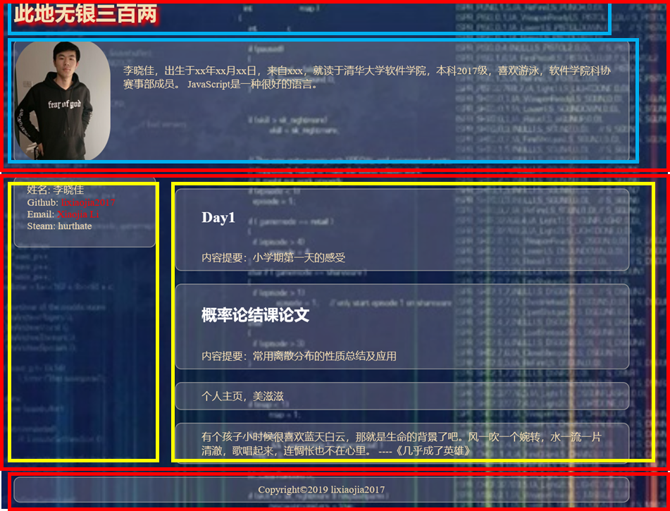

姓名：李晓佳
学号：2017013627
E-mail：lixiaojia2017@163.com
Github Pages：lixiaojia2017.github.io
pc端的页面布局：

由上图所示，将整体布局分成三大部分，以红色边框为界，采用flex布局实现。第一部分内含两个小部分，以蓝色边框为界，第二部分分成左右两部分，以黄色边框为界，均采用flex布局实现。
手机端的页面布局介绍：
由于手机端基本不存在左右两部分的划分，所以采用了flex布局方式自上而下布局，可通过缩放页面宽度查看适配手机浏览器的页面。
index.html 个人主页
indexcss.css 样式表
contents 存放日志链接到的网页
images 存放网页中用到的图片
根据实验要求文档，本次实验完成了个人介绍，个人日志的基本要求。采用简约的设计风格，尽量使得个人主页界面美观，使用方便。同时该主页支持Chrome、Edge、Firefox等主流浏览器，同时在手机端也可正常显示。
本次设计的主页太过于简陋，尝试实现了按钮及下拉选项，但是由于布局所限，只能删去，希望之后能够通过JavaScript以及对于css语言了解的深入实现更加美观的个人主页。